Volt... ?

- a été fondé après le vote du Brexit
- est un mouvement progressif et participatif de volontaires paneuropéens
- est actif dans 32 pays, avec des partis politiques dans treize d'entre eux
- est une plateforme qui veut permettre aux citoyennes à participer plus active à la politique
Plus de détail sur www.voltfrance.org/vision
Candidature Citoyenne

- L'idée est une liste ouverte.
- Pour les citoyens qui vont se porter comme candidate
- Placement dans la liste par un vote démocratique entre tous membres
- Aussi possible de se placer à la fin de la liste comme "appuyer"
Plus d'info sur www.candidaturecitoyenne.fr
Déclaration d'Amsterdam

- créé en collaboration des tous volontaires des pays européens qui ont voulu participer
- un projet sociétal à la fois visionnaire et réaliste
Trois parts:
- (1/3) Rénover l’Europe - union politique plus forte, pouvoir d'agir de ses citoyen, securité et responsabilitation
- (2/3) Faire de l’Europe un moteur économique - la croissance, l'investissment dans l'avenir, l'éducation
- (3/3) Bâtir une société juste et responsable - transition écologoique, immigration responsable et humaine, Œuvrant pour l’équité et l’égalité
Plus de détail sur www.voltfrance.org/vision.
Téléchargez en pfd
A) Mettant en oeuvre la transition écologique
- L'Empreinte Climatique
- Economie circulaire
- Agriculture responsable
L'Empreinte Climatique - La prix du carbon
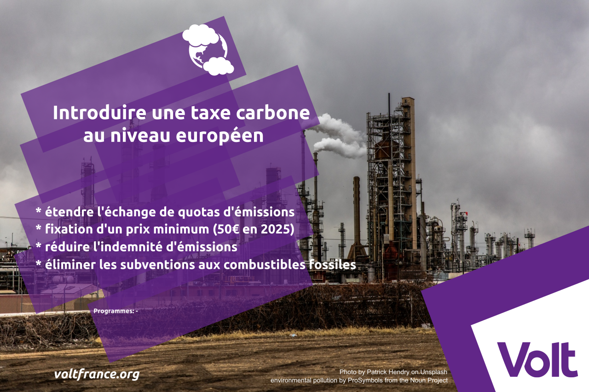Encourager la croissance de l’économie verte en introduisant une taxe carbone au niveau européen, ainsi que différents types de tarifications du carbone sur toute la chaîne de production, et en se débarrassant des subventions des combustibles fossiles. Les gains seront utilisés pour financer des projets d’atténuation et d’adaptation au climat, et pour créer plus d’emplois.
Pourquoi ? Avec de plus en plus de rapports climatiques qui nous préviennent que nous ne faisons pas assez pour baisser les émissions de CO2, l’UE doit faire plus que mettre en place des politiques qui incitent de façon indirecte à réduire nos émissions de CO2, il faut mettre un prix sur le CO2. L’Europe a les ressources et les technologies pour se placer à la tête du mouvement pour baisser la production de CO2 sans affecter notre compétitivité globale.
Comment ? Nous allons proposer un amendement à la directive sur la taxation des produits énergétiques et de l'électricité pour mettre une taxe sur le carbone dans les secteurs qui ne sont pas couverts par le système communautaire d’échange de quotas d'émission, plus précisément sur l’industrie du pétrole, du transport et du chauffage. Cet amendement demandera aux Etats Membres d’introduire un taux minimum de taxe sur le carbone. Notre amendement changera également la Directive d'échange sur les quotas d’émissions de gaz à effet de serre et la régulation sur la mise aux enchères, pour qu’il y ait un prix minimum (de 50€ en 2025) afin de créer une stabilité de prix au long terme et d’encourager à investir dans les technologies vertes. Nous allons également baisser le nombre d’allocations à titre gratuit et changer les critères d’éligibilité qui sont inclus dans la “liste des fuites de carbone” en proposant un amendement à la directive du système communautaire d’échange de quotas d'émission. Enfin, nous proposerons un amendement à la directive sur la taxation des produits énergétiques et de l'électricité pour qu’elle n’exempte plus les combustibles fossiles, afin de supprimer progressivement les subventions.
Financement ? Non-applicable, cette proposition ne coûte rien à l’UE.
L'Empreinte Climatique - Les réseaux vertes
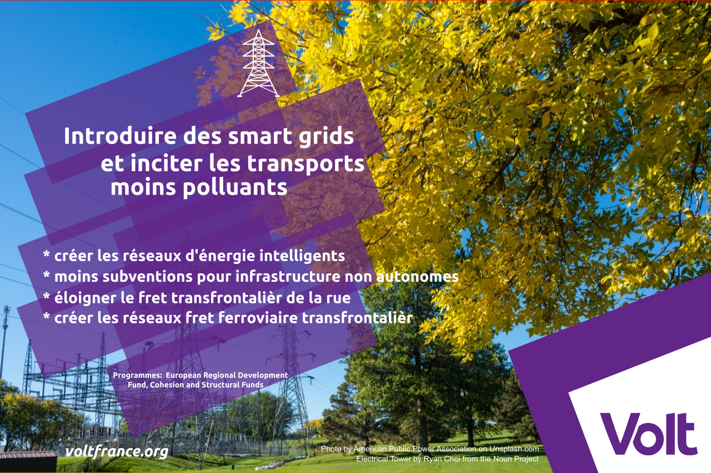Utiliser l’énergie de façon plus intelligente en introduisant des “smart grids”, en proposant des objectifs d’économie d’énergie plus ambitieux, et en incitant nos systèmes de transport à être moins polluants et à consommer moins d’énergie.
Pourquoi ? Le réchauffement climatique nous force à mettre en place des objectifs énergétiques plus ambitieux, nous devons construir un système capable de répondre à une demande qui varie et à une production d’énergie décentralisée. Dans le même esprit, notre système de transport doit progresser vers une infrastructure plus efficace et à faible émission, qui est capable de répondre à nos besoins en restant le moins polluant possible.
Comment ? Nous proposerons d’aller plus loin que les 40% de réduction d'émissions des contributions déterminées au niveau national pour pouvoir atteindre nos engagements de l’Accord de Paris. Nous proposerons de passer de 40% de réduction d'émissions à 55%, et à 45% d'énergies renouvelables d’ici 2030. Cette proposition aura comme objectif de réduire les émissions du secteur du transport en adaptant notre système de fret pour que la marchandise ne soit sur la route que pour les derniers kilomètres, ce qui réduirait les émissions de CO2 mais aussi le nombre d’embouteillages. Nous proposerons également d’ajuster les subventions de transport vers une infrastructure plus verte, au lieu d’investir dans des installations qui ne sont pas autosuffisantes, comme des aéroports. Nous renforcerons le partage d’énergies alternatives produites en Europe en proposant un nouvel acte législatif qui créera une norme minimale pour faciliter la création d’un réseau européen de stations de gaz naturel liquéfié et d'hydrogène.
Financement ? Pour harmoniser le réseau de distribution d'énergie, nous utiliserons le fonds européen de développement régional. Le fonds structurel et le fonds de cohésion européen seront nos sources de financement pour nos plans de réforme des subventions du transport.
Économie circulaire: les produits soutenables
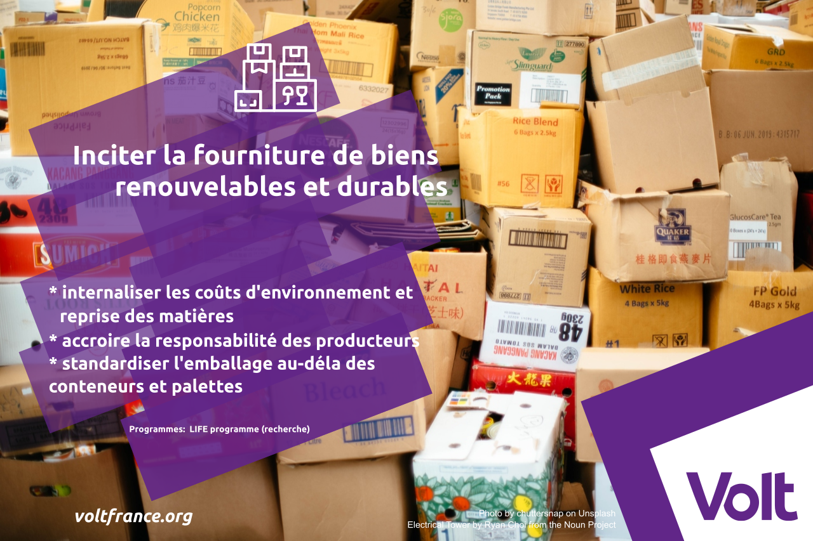Lancer une véritable l'économie circulaire en stimulant la fourniture de biens et de services renouvelables et durables. Cela se fera en harmonisant les incitations fiscales, en accélérant la création de réglementations adaptées et en allouant des crédits pour repenser le design et la numérisation des organisations, des biens et des services.
Pourquoi ? Au cours des dernières décennies, nous nous sommes habitués à consommer des produits sans se soucier de la fin de leur cycle de vie. Alors que les déchets issus des activités humaines deviennent de plus en plus visibles, où que nous allions et quoi que nous mangions, Volt considère qu'il est temps de passer à une économie plus circulaire et de d’aborder véritablement la question du cycle de vie des produits.
Comment ? Beaucoup d’efforts ont été réaliser pour supprimer les barrières réglementaires entre les pays européens. L’émergence d’une économie entièrement circulaire est désormais limitée par l’absence de réglementations en ce sens. Nous présenterons donc une proposition de législation visant à la création d'un tel système de réglementation. Ce nouveau système fonctionnera sur la base de deux conditions : 1) l’internalisation des coûts environnementaux et de la valeur de la récupération de matériaux stratégiques, et 2) l’incitation à la conception de designs circulaires par le biais d’une responsabilité accrue des producteurs. Pour s'assurer que cette proposition s'attaque réellement aux obstacles limitant l’émergence d’une économie circulaire, un comité spécialisé sera créé pour étudier la manière optimale dont ces nouvelles réglementations devraient être conçues. En outre, nous présenterons une proposition visant à modifier la directive 94/62 sur les déchets d’emballage pour assurer une harmonisation minimale à travers l’Europe visant à standardiser les emballages de produits non destinés à la consommation, au-delà des conteneurs et des euro-palettes, et à introduire des emballages réutilisables sur le dernier kilomètre.
Financement ? Nous financerons les recherches sur les meilleurs moyens d’ajuster le système de réglementation sur la base du programme LIFE.
Économie circulaire: Un prix pour le plastique
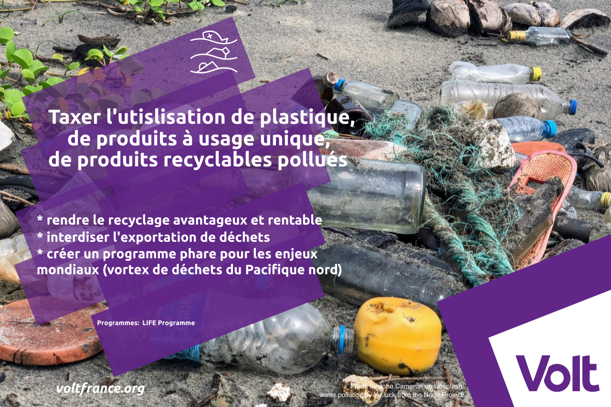Mettre un terme à la pollution à base de plastique et réduire la production les déchets en général en taxant l'utilisation de plastique, de produits à usage unique, et de produits recyclables pollués, et en interdisant l'exportation de déchets dans des pays tiers.
Pourquoi ? Alors que le monde se noie dans les ordures, des efforts plus ambitieux doivent être déployés pour réduire de manière significative l’utilisation des emballages ou pour en conserver et recycler une plus grande part. D’autre part, la contamination des matières recyclables pose un problème aussi important que l’incapacité de trier et de réutiliser correctement les emballages en matériaux mélangés, puisque les pays tiers ne sont plus disposés à importer des déchets de l’UE. Il est temps d'agir.
Comment ? Nous travaillerons à réduire les déchets plastiques pour atteindre l'objectif de 55% de déchets recyclés d'ici 2030, comme indiqué dans la Stratégie européenne en matière de plastique 2018 et la Directive relative aux emballages et aux déchets d'emballages, en mettant l'accent sur le rôle des entreprises dans le recyclage du plastique. Nous proposerons de renforcer la législation sur une responsabilité élargie des producteurs et de faciliter le partage des bonnes pratiques afin de soutenir les efforts visant à rendre le recyclage rentable. Enfin, nous veillerons à ce que les pays européens travaillent ensemble et donnent l'exemple en matière de réduction des déchets au-delà de nos frontières. Un programme similaire à Horizon 2020 sera mis en place dans le but de soutenir des projets tels que le nettoyage des continents de plastique présents dans les océans.
Financement ? Le programme LIFE sera utilisé pour rassembler les meilleures pratiques en matière de valorisation du recyclage pour les entreprises.
Économie circulaire: Introduire l'étiquette CCE
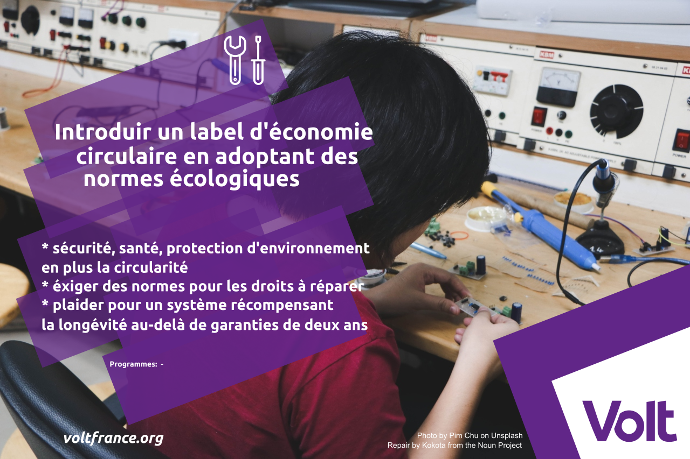Promouvoir la transition vers une consommation et des dépenses gouvernementales durables en introduisant un label d'économie circulaire, en adoptant des normes écologiques pour l’octroi de marchés publics, et en soutenant le partage des ressources et une plus grande longévité des produits.
Pourquoi ? La réglementation en vigueur sur les biens de consommation impose déjà des normes de qualité élevées, mais il convient de mettre davantage l'accent sur les questions de longévité des produits. Des voitures aux téléphones portables en passant par les vêtements, nous nous sommes habitués à remplacer les produits à intervalles rapprochés, souvent en jetant des objets parfaitement utilisables.
Comment ? Nous allons introduire un “label CCE” qui ajoute la notion de circularité à la sécurité et à la protection de la santé et de l'environnement (le label “CE” existant), à l'instar de l'introduction du label écologique de l'UE. En outre, nous plaiderons pour un système récompensant la longévité et le droit de réparation au-delà de garanties de seulement deux ans en introduisant des normes applicables dans tous les pays de l'UE et exigeant que les fabricants rendent les produits plus facilement réparables.
Financement ? Non applicable, cette proposition n’entraîne aucun coût pour le budget de l’UE.
Agriculture Durable: Producteurs écologiques
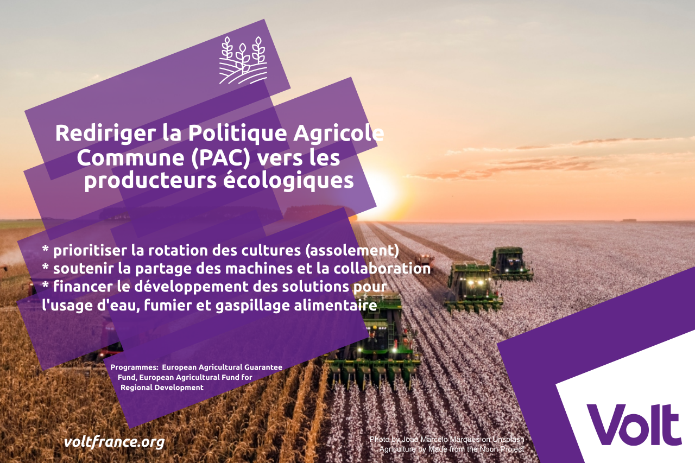Soutenir une agriculture durable en redirigeant la Politique Agricole Commune (PAC) des grands producteur vers les producteurs faisant usage d'approches écologiques.
Pourquoi ? Il est établi que l'élevage est hautement demandant en ressources et provoque de la déforestation et de l'érosion. Si le maintien des moyens et gros producteurs permettrait d'augmenter la compétition et maintenir les prix bas, cela augmente les risques de développement de mono-cultures qui ne sont pas soutenables tant d'un point de vue économique qu'écologique. Afin de maintenir une agriculture durable, les technologies industrielles ne doivent être utilisées que pour assurer que les ressources soit utilisées plus efficacement et donc obtenir une baisse de l'impact environmental.
Comment ? Nous supporterons des réformes de la Politique Agriculture Commune augmentant la durabilité de notre agriculture. Tout d'abord, en introduisant une proposition visant à inclure dans la PAC des financement faisant partie de payement 'verts' directs à destination des fermes de toutes tailles les incitant à effectuer une transition des monocultures vers des cultures alternées et plus diverses. Ensuite, en accordant des avantages stimulant le partage, le co-investissement dans l'équipement, la collaboration sur les données et le développement de solutions sur l'utilisation du fumier, de l'eau et des déchets alimentaires.
Financement ? Le Fonds Européen Agricole de Garantie (FEAGA) sera utilisé, ainsi que le Fonds Européen Agricole pour le Développement Rural (FEADER)
Agriculture Durable: Préserver la biodiversité
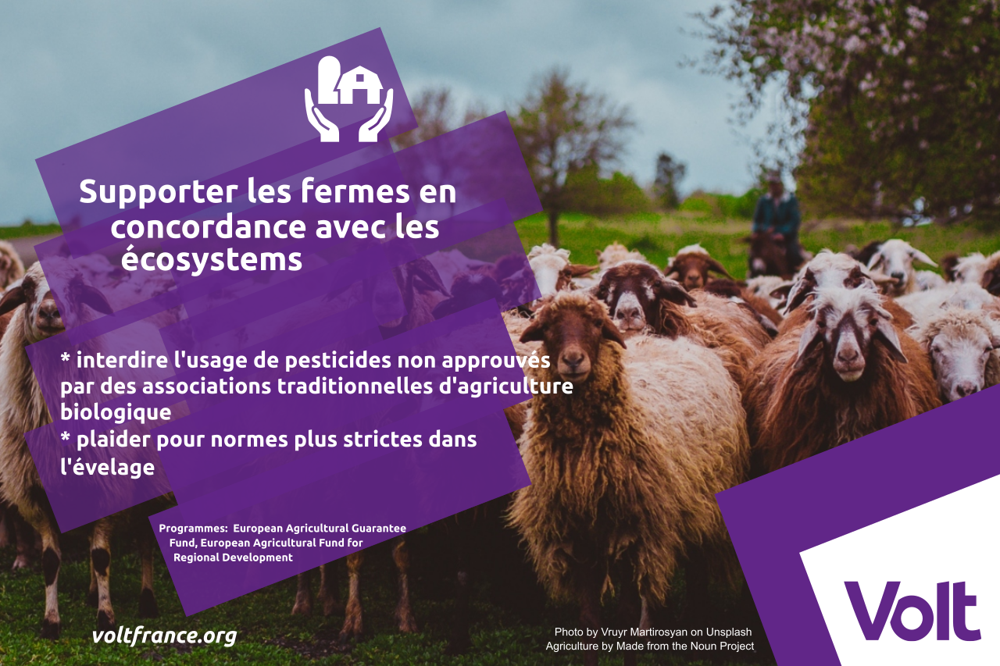Augmenter la qualité des produits et la biodiversité en supportant les fermes qui gère leurs terrains en concordance avec les écosystèmes locaux en se concentrant sur la collaboration avec les habitants naturels du milieu et en banissant l'usage de pesticide et de néonicotinoïdes.
Pourquoi ? Le focus sur les monoculture et la susceptibilité résultante des cultures et élevages aux maladies demandent un usage important de pesticides et antibiotiques qui, à leur tour, affectent les populations d'insectes et peuvent rendre les antibiotiques inefficaces contre les maladies humaines. C'est un risque trop grand à faire peser sur nos écosystèmes et nos systèmes de santé.
Comment ? Une fois élu au Parlement Européen, nous ferons pression pour voter une résolution limitant l'usage des pesticides qui n'ont pas été approuvé par les associations d'agriculture biologiques pour promouvoir une biodiversité et des variétés locales et pour réduire la susceptibilité aux fungi et aux maladies. Additionnellement, en poursuivant le développement du lien entre la réception du support au revenu et la protection du bien-être animal, nous supporterons des standards plus stricts sur l'élevage avec des tailles de groupes d'élevages appropriées à l'espèce, un espace adéquat et l'intégration de distractions comme des parts d'une législation générale sur le le bien être animal.
Financement ? Le Fonds Européen Agricole de Garantie (FEAGA) sera utilisé, ainsi que le Fonds Européen Agricole pour le Développement Rural (FEADER).
B) l’Immigration responsable et avec humanité
- Demandeurs d’asile et réfugiés
- Migration de travail
L'immigration humaine: Système des Réfugiés d'UE
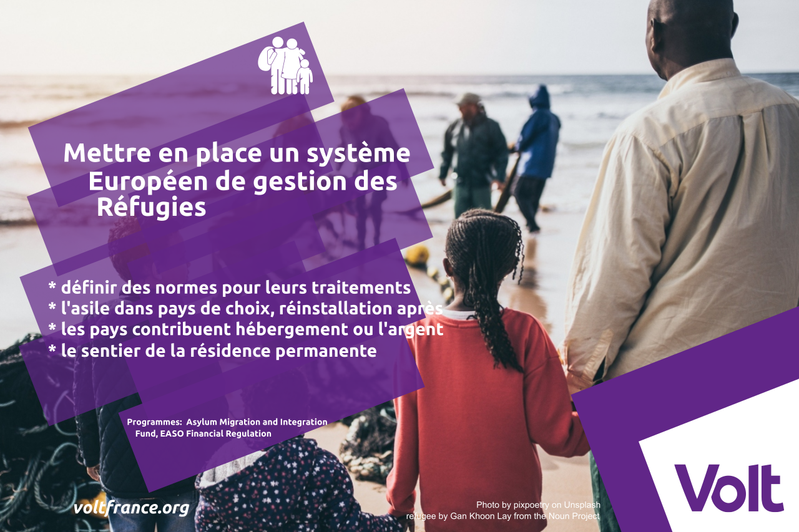Contrôler les flux de réfugiés voulant entrer dans l’Union Européenne en mettant en place un Système Européen de Gestion des Réfugiés. Le système de Dublin doit être réformé et complété par un système de règlement qui prévoit des pénalités et sanctions pour les États refusant d’assumer leurs responsabilités.
Pourquoi ? Ces dernières années, les pays européens ont montré leur incapacité à prendre seuls en main la gestion des flux de réfugiés. Certains pays, abandonnés, ont été touchés de manière disproportionnée par ces flux et ont été dépassés par les responsabilités qu’ils avaient à assumer. En conséquence, les migrants ont souffert. Nous pensons que les pays européens ont la responsabilité morale et historique de s’assurer que les demandeurs d’asile et les réfugiés soient traités de façon humaine et équitable. L’Europe est tout à fait en mesure de gérer les flux migratoires quand elle travaille ensemble et utilise pleinement les ressources disponibles.
Comment ? Nous voulons que la responsabilité de la gestion des flux migratoires soit transférée au niveau européen, dans la mesure du possible en l’absence de compétence exclusive de l’UE. Nous proposons une harmonisation minimum des conditions de demande d’asile qui sera appliquée dans tous les pays européens. Afin d’établir des critères communs, nous voulons le renforcement du mandat de l’EASO (le Bureau européen d’appui en matière d’asile) pour développer un processus standardisé de demande d’asile sur la base de données centralisées. Nous amenderons aussi le règlement 604/2013, appelé le règlement de Dublin. Cet amendement remplacera la règle selon laquelle la demande d’asile doit être effectuée dans le pays d’arrivée. A la place, nous proposons la mise en oeuvre du principe de préférence : la demande d’asile pourra être effectuée dans le pays choisi par le demandeur. Une fois la demande réalisée, le demandeur d’asile entrera dans un système de relocation garantissant que les pays européens gèrent le flux de réfugiés ensemble. Les conditions de la répartition géographique des migrants seront basées sur des facteurs objectifs tels que la densité de population, l’âge moyen, la richesse et la croissance du territoire. Au sein de ce système amendé, les pays européens seront chargés de fournir les capacités ...
... financières et de logement pour l’accueil des migrants. Les pays ne se soumettant pas au règlement commun seront sanctionnés par la perte de certaines aides européennes, afin de mettre un prix sur le manque de solidarité. De plus, nous introduirons une proposition de réforme du système commun d’asile européen afin d’inclure la possibilité d’attribution du statut de résident permanent aux réfugiés qui seraient encore dans l’impossibilité de rentrer dans leur pays après une période de 5 à 7 ans, à condition d’avoir un casier judiciaire vierge, d’avoir appris la langue du pays et d’avoir acquis des connaissances civiques.
Financement ? Le fonds Asile Migration Intégration va être utilisé. Le renforcement de l’EASO va être financé selon le règlement financier de l’EASO.
L'immigration humaine: Juste et efficace
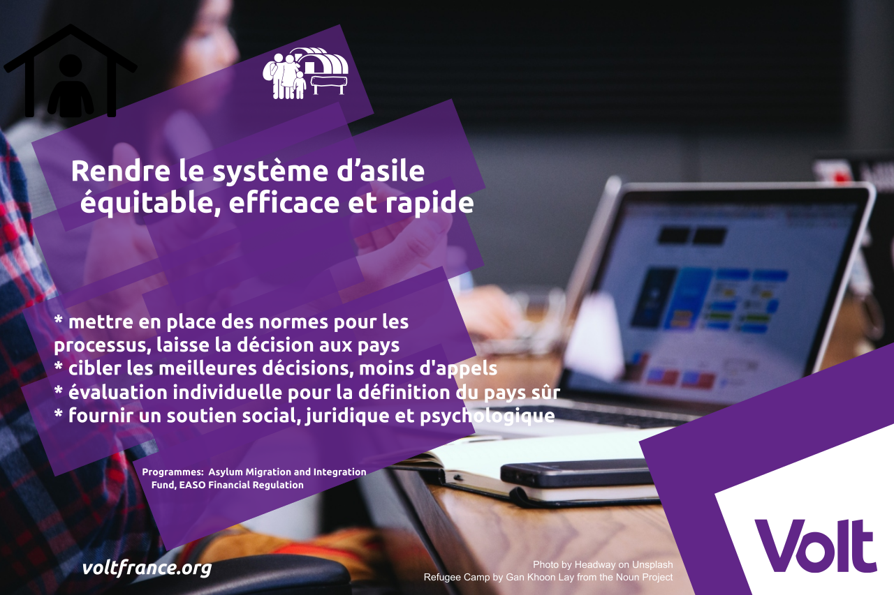Rendre le système d’asile équitable, efficace et rapide, en publiant des directives européennes qui assurent des procédures plus courtes et fournissent un soutien social, juridique et psychologique.
Pourquoi ? La réforme du règlement de Dublin et l’amélioration de la procédure de demande d’asile doivent aller de pair. Laisser les demandeurs d’asile en attente pendant une longue période pendant laquelle leur statut est incertain est préjudiciable pour les individus et décourage les efforts à l’intégration. La procédure d’asile comme les opportunités offertes aux demandeurs d’asile pour s’intégrer doivent être améliorées si nous voulons convertir un ressentiment de risque en une chance réelle.
Comment ? Nous introduirons une proposition d’amendement de la directive des procédures d’asile afin d’y inclure un minimum de règles harmonisées sur le statut légal des réfugiés en Europe. La décision d’accepter ou de rejeter des réfugiés restera à la discrétion des états membres. Cependant, la proposition d’amendement inclura des standards communs pour la réception des demandes et leur traitement durant la procédure de demande d’asile, guidés par les recommandations d’organisations internationales telles que l’UNHCR. Les exceptions aux standards minimums seront examinées et éliminées si possible. L’amendement aura aussi pour but d’assurer de meilleures décisions pour les demandes d’asile en première instance, pour rendre la procédure plus rapide et efficace et éviter les appels. De plus, l’amendement va assurer que la présomption de pays tiers sûr sera réfutable, et ainsi les demandeurs pour évoquer leur situation personnelle vis-à-vis de ce pays tiers. Nous introduirons une proposition d’amendement de la directive des conditions d’accueil afin de d’atténuer le flou juridique concernant la définition des standards d’un niveau de vie décent. Cette proposition va inclure, en plus de standards en matière de logement et d’accès aux services sociaux, le droit à un soutien psychologique si nécessaire. Nous proposerons ...
... aussi un système de réclamation si ces procédures et standards ne sont pas respectés par certains pays européens. Ce système de réclamation devra être accessible en dehors des administrations locales de référence pour assurer la protection juridique des demandeurs d’asile.
Financement ? Le fonds Asile Migration Intégration va être utilisé. Ces propositions n’impacteront pas le budget de l’Union Européenne.
L'immigration humaine: Intégration Réussie
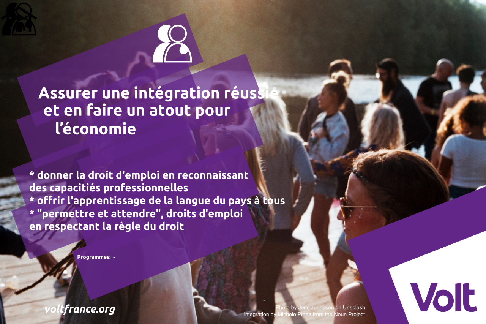Assurer une intégration réussie et en faire un atout pour l’économie. Les demandeurs d’emploi doivent être en mesure d’intégrer le marché de l’emploi dès leur arrivée et que leurs capacités professionnelles soient reconnues. De plus, l’apprentissage de la langue du pays doit être accessible
à tous les demandeurs d’asile.Pourquoi ? Nous devons encourager les demandeurs d’asile qui sont motivé à s’intégrer, apprendre et veulent contribuer à la société. En faisant en sorte de pourvoir à leurs besoins vitaux et en les mettant sur le chemin de l’emploi, nous faisons notre part pour leur permettre de s’intégrer réellement.
Comment ? Nous allons proposer une adaptation du règlement 2013/32 sur l’attribution et le retrait du statut international de protection d’asile afin de permettre aux demandeurs de travailler dès le premier jour. De plus, cette proposition va inclure une procédure de reconnaissance des capacités professionnelles pour permettre aux demandeurs d’asile de continuer à exercer le métier qu’ils exerçaient dans leur pays d’origine si cela est possible. Nous ferons aussi pression pour introduire le principe « d’habilitation et d’attente » dans le nouveau règlement de procédure d’asile. Ce principe va s’assurer que les conditions nécessaires sont en place pour que le droit de travailler soit réaliste en proposant l’apprentissage de la langue du pays d’accueil. Il sera aussi spécifié que le droit au travail inclut l’obligation de respecter la loi.
Financement ? Cette proposition n’entraine aucun cout pour le budget de l’UE.
L'immigration humaine: Réfugiés du climat
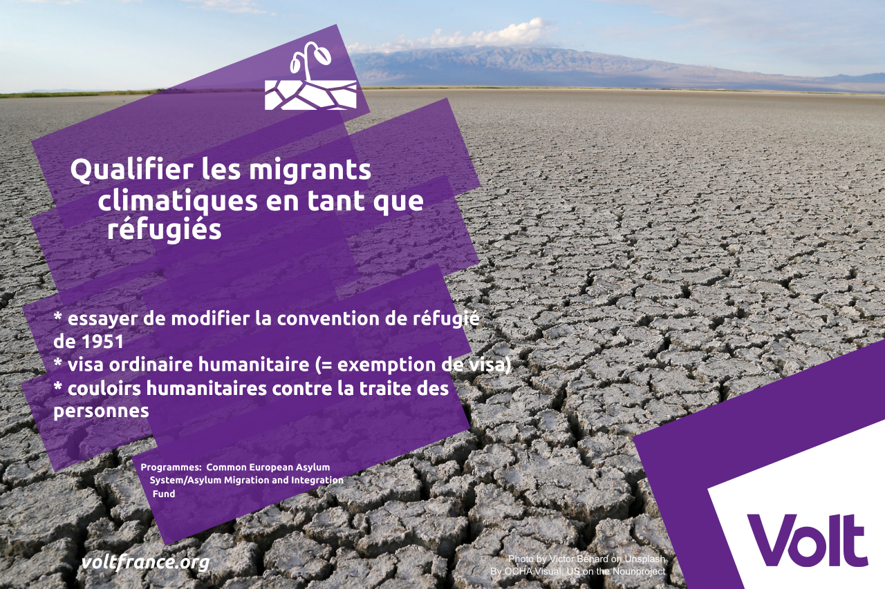Protéger ceux qui sont dans le besoin, en qualifiant les migrants climatiques et économiques en tant que réfugiés aux yeux des lois européennes en renforçant l’utilisation de corridors humanitaires.
Pourquoi ? Dans les temps incertains, il est nécessaire de faire progresser les efforts européens au-delà de nos frontières. Ceci inclut des efforts pour résoudre des conflits et d’aider les infrastructures locales afin de prévenir que des populations aient à fuir et se réfugier. En ce moment, cela concerne un petit nombre de personnes, et presque tous peuvent être qualifiés de réfugiés. Cependant, Volt pense que 18 pays européens ont l’obligation de protéger et d’étendre leur support à ceux qui sont les plus affectés et les moins responsable du changement climatique.
Comment ? Au long terme, nous proposerons un amendement à la convention sur les réfugiés de 1951 afin qu’elle prenne aussi en compte les réfugiés de la famine et du climat. Les pays européens ne peuvent pas assumer cette charge seuls et nous pensons qu’en faisant pression ensemble, nous pourrons envoyer un message fort et parvenir à notre but. Au court terme, en faisant précision pour la requalification de la définition de réfugié, nous supportons la (ré-)introduction du visa humanitaire dans tous les pays européens. Dans cette proposition de loi, nous inclurons les migrants de la famine et du climat en tant que groupe collectif requérant protection pour leur garantir les mêmes droits que ceux des réfugiés. L’introduction du visa humanitaire sera initialement mise en place au travers d’une exemption de visa pour les ressortissants de pays dont ressortent le plus de réfugiés. L’exigence de visa pour ces ressortissants sera suspendue par une adaptation du règlement 539/2001.
Financement ? La mise en place systémique de corridors humanitaires serait une partie du Système commun européen d’asile pour lequel le fonds Asile Migration Intégration sera utilisé.
Migration de Travail: Migration Économique
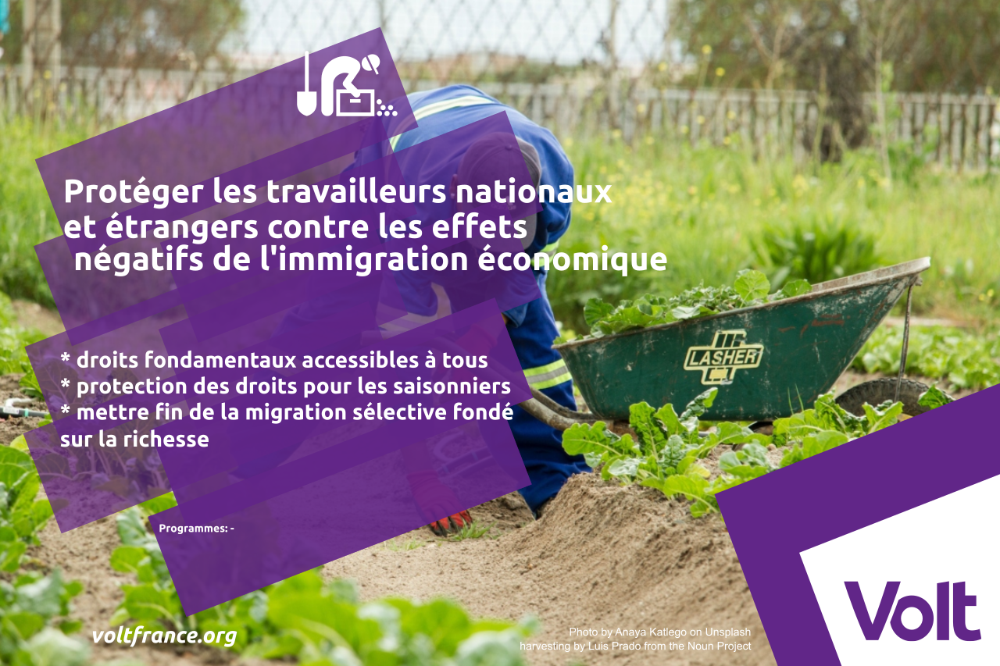Protéger les travailleurs nationaux et étrangers contre les effets négatifs de l'immigration économique, en appliquant une harmonisation minimale entre tous les Etats membres de l’UE. Les pays européens doivent veiller à ce que l'accès aux services sociaux, juridiques et de santé de base de l'Union européenne soit garanti.
Pourquoi ? Une Europe qui accorde le droit à la libre circulation et au travail doit avoir au moins un ensemble minimal de règles qui régissent les mouvements. Cela signifie veiller à ce que les services de base soient accessibles à tous, tout en limitant l'accès aux autres services. Et les initiatives nationales visant à contourner les règlements pour obtenir des avantages locaux à court terme doivent être évitées.
Comment ? Nous mettrons en place des politiques axées sur la réinstallation, en nous appuyant sur l'expérience du Système de réinstallation d'urgence de 2015. Nous prônerons l'introduction d'une directive qui précise les droits de toutes les catégories de migrants économiques, à l'instar de la Directive 2014/36 amendée, dans laquelle le Parlement Européen a voulu que les droits des travailleurs saisonniers sont clarifiés. En outre, nous nous efforcerons de défendre une plus grande diversité parmi les migrants en plaidant pour l'arrêt de la pratique qui prévaut dans les pays européens pour accorder le droit de séjour aux étrangers aisés, ainsi l'achat de propriétés locales ou l'investissement dans des entreprises locales.
Financement ? Sans objet, cette proposition ne comporte aucun coût pour le budget de l'UE.
Migration de Travail: Visa Temporaire
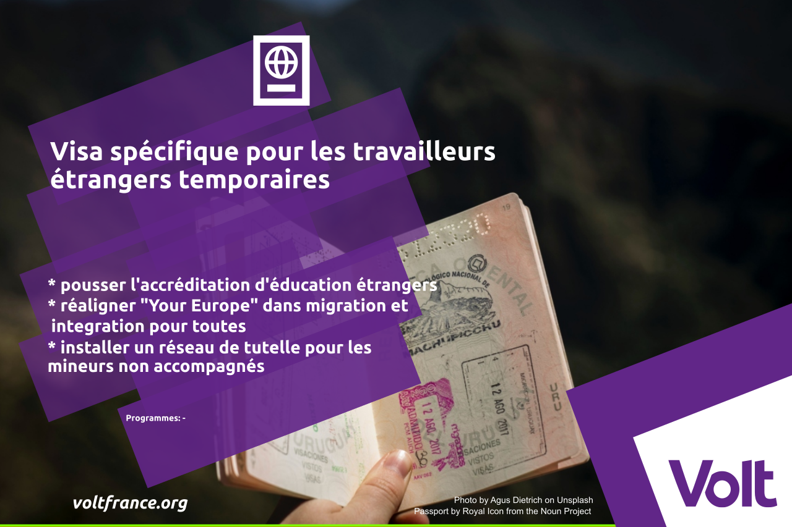Accroître les voies légales d'entrée en Europe, en offrant un visa spécifique pour les travailleurs étrangers temporaires.
Pourquoi ? Les citoyens de l'UE et les ressortissants de pays tiers se heurtent encore aujourd'hui à des obstacles lorsqu'ils tentent de trouver un emploi sur les marchés nationaux du travail et de s'intégrer aux sociétés. Nous devons éviter de gaspiller l'enseignement supérieur en interdisant l'accès au marché et fournir une perspective à long terme aux travailleurs migrants qui s'intègrent au marché du travail et contribuer aux sociétés locales, tout en n'oubliant pas non plus ceux qui ne sont pas encore en mesure de le faire.
Comment ? Nous insisterons pour que la réforme de 'Votre Europe' inclue le travail, la migration et l'intégration pour les citoyens de l'UE et des pays tiers désireux de vivre et de s'intégrer dans l'UE, et de travailler dans un autre pays de l'UE. De plus, une fois au Parlement, nous réexaminerons les questions suivantes : la directive sur le permis unique et la directive sur le séjour de longue durée, afin de garantir que les groupes de migrants qui remplissent les conditions requises pour présenter une demande en vertu de ces dispositions et que les procédures sont suffisamment diversifiées. Veiller à ce que les mineurs soient récompensés d'une protection adéquate, nous soutiendrons aussi la création d'un réseau européen d'information et de communication sur les droits de l'homme et les libertés fondamentales, ainsi que sur la tutelle qui inclut les mineurs non accompagnés qui tombent sous le coup d'une décision de justice, dans la catégorie des migrants économiques en situation irrégulière.
Financement ? Sans objet, cette proposition ne comporte aucun coût pour le budget de l'UE.
Migration de Travail: Visa d'Expert
Nous souhaitons faire de l'Europe une plaque tournante des talents et de l'innovation, en la simplifiant et en la rendant plus simple et plus efficace, plus attractive pour obtenir un visa d'expert, surtout après l'acquisition d'un diplôme universitaire dans un État membre de l'UE.
Pourquoi ? Construire des industries et des sociétés durables pour l'avenir exige ce qu'il y a de mieux. Nous devons mettre l'accent sur les valeurs que défend l'Europe et les défendre de manière univoque à l'étranger, tout en mettant en place des systèmes qui facilitent la migration hautement qualifiée et l’intégration dans le pays d'arrivée.
Comment ? Nous présenterons une proposition visant à modifier la directive 'carte bleue' Directive sur le permis unique visant à simplifier la procédure de renouvellement de la carte bleue pour l’établissement de spécialistes hautement qualifiés et les membres de leur famille. Grâce à cette modification, nous supprimerons les demandes parallèles et les autres demandes de nature administrative ; ce qui facilite les délocalisations dans l'UE. Cela permettra aux détenteurs d’une « carte bleue »et aux membres de leur famille à se déplacer à l'intérieur de l'espace Schengen et d'aller travailler ailleurs. Nous modifierons la Directive sur la carte bleue afin d'y inclure des lignes directrices en ce qui concerne les seuils salariaux, la migration familiale subséquente, la validité du visa et les conditions sociales, des assurances en cas de chômage ou d'invalidité basées sur les meilleures pratiques en matière de migrations de travailleurs hautement qualifiés en Europe. En outre, nous ferons pression en faveur d'une stratégie européenne cohérente visant à 'attirer les meilleurs talents et le commercialiser activement dans les 'pays cibles' par l'intermédiaire de l'UE et les ambassades des États membres.
Financement ? Sans objet, cette proposition ne comporte aucun coût pour le budget de l'UE.
Migration de Travail: Coordination
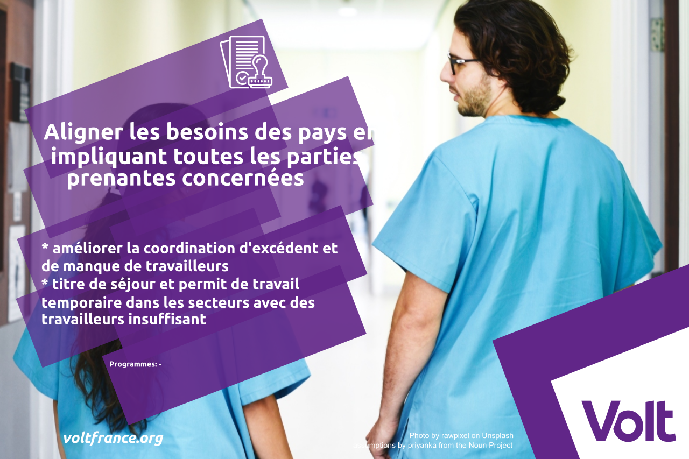Veiller à ce que les pays d'origine et les pays européens d’arrivée bénéficient de l'immigration économique temporaire, en alignant les intérêts des deux parties et en impliquant toutes les parties prenantes concernées (par exemple les employeurs et les syndicats) dans le processus d'élaboration des politiques.
Pourquoi ? La libre circulation des travailleurs au sein de l'UE a été un élément clé pour favoriser l'employabilité et l'intégration. Elle est bénéfique si elle est motivée par la demande (emplois disponibles), mais présente des lacunes du côté de l'offre (emplois à créer), lorsqu'il n'y a pas suffisamment de personnel qualifié ou de nouveaux travailleurs qui entrent dans le système. Ces deux aspects peuvent être abordés par des politiques.
Comment ? Une fois au Parlement, nous rédigerons une proposition pour une nouvelle législation sous la forme d'une résidence temporaire à un endroit précis et d'un permis de travail disponible pour les migrants non ressortissants de l'UE relevant d'une catégorie spécifique comme catégorie de travailleurs migrants, tels que les travailleurs de la santé ou les constructeurs, dont il existe une pénurie sur le marché du travail européen. Les critères d'octroi d'un tel permis de séjour et de travail seront dérivés d'un permis de séjour et de travail de l'échange des meilleures pratiques au niveau national des pays européens et de la réunion les parties prenantes pertinentes telles que les employeurs et les syndicats, spécifiques aux régions européennes.
Financement ? Sans objet, cette proposition ne comporte aucun coût pour le budget de l'UE.
C) L’équité et l’égalité
- Egalité et anti-discrimination
- Secteur public
- Inclusion
Antidiscrimination: Représentation des femmes
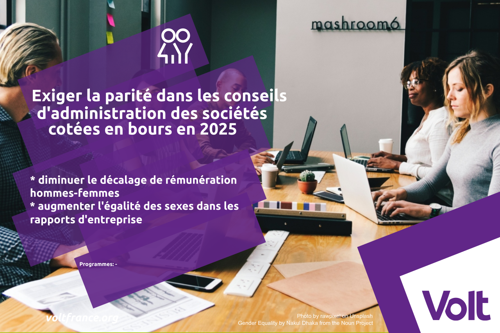Briser le plafond de verre en exigeant la parité dans les conseils d'administration des sociétés cotées en bourse d'ici 2025 et en obligeant les entreprises à faire état des écarts de rémunération hommes-femmes et de la parité de leurs employés.
Pourquoi ? Avec un écart de rémunération de 16,2% entre hommes et femmes et une représentation moyenne de femmes de 23% dans les conseils d'administration, il reste à l'Union européenne un long chemin à parcourir pour réaliser la parité sur le lieu de travail. Des quotas et une plus grande transparence aideront à briser le plafond de verre, c’est-à-dire les obstacles empêchant les femmes de réaliser leur plein potentiel.
Comment ? Nous travaillerons à retirer la directive actuelle sur la présence des femmes dans les conseils d'administration et à la remplacer par une version renforcée, visant à accroître la représentation des femmes dans les conseils d'administration au moyen d'un quota temporaire par sexe à mettre en œuvre progressivement – les conseils d’administration devront ainsi atteindre une représentation de 30% de femmes d'ici 2020, puis d’au moins 40% d'ici 2025. Ce délai donnera aux entreprises suffisamment de temps pour préparer la transition et embaucher de nouvelles femmes dirigeantes. En cas de manquements, les entreprises risquent des amendes et la radiation du marché. La nouvelle directive appellera également, dans les moyennes et grandes entreprises, publiques et privées, à la communication obligatoire d'informations sur parité de leurs employés et sur les écarts de rémunération entre hommes et femmes. Afin d'éviter que la directive ne soit à nouveau bloquée, nous ferons pression sur les États membres pour qu'ils prennent position publiquement. Nous chercherons également à adapter une directive visant à garantir la participation des travailleurs et le vote des membres du conseil d’administration de sociétés cotées en bourse (en actualisant la cinquième directive sur le droit des sociétés, jamais adoptée par les Etats membres), qui comprendra une nouvelle clause de parité hommes-femmes. Les femmes doivent être représentées de manière égale.
Financement ? Cette proposition n’entraîne aucun coût pour le budget de l’UE.
Antidiscrimination: Droit d'Avortement
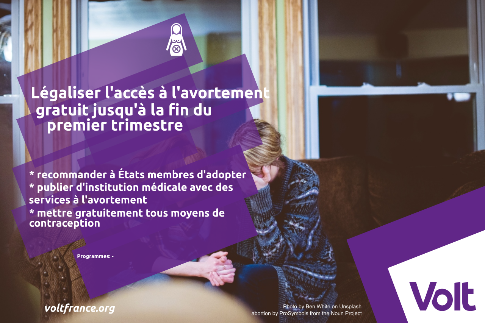Veiller au respect des droits des femmes en légalisant l'accès à l'avortement gratuit jusqu'à la fin du premier trimestre et en assurant l’accès à des moyens de contraception gratuit partout en Europe.
Pourquoi ? L'accès aux services, aux biens et aux installations de soins liés à la reproduction est trop souvent limité pour les femmes dans certains États européens, où des réglementations strictes en matière d'avortement et de contraception empêchent les femmes de prendre pleinement le contrôle de leur propre corps. L'avortement reste interdit ou restreint dans cinq pays de l'UE, tandis que l'accès à la contraception varie considérablement d'un État membre à l'autre.
Comment ? Nous proposerons une recommandation incitant les États membres à définir une pratique commune en matière d'avortement et à modifier les législations nationales pour légaliser l’avortement sur demande jusqu'à la douzième semaine de grossesse au moins, et plus longtemps dans les cas où le fœtus n'est pas viable ou la continuation de la grossesse mettrait la mère en danger. Chaque prestataire de soins de santé devra identifier et communiquer au ministère de la santé les emplacements et le nombre total de médecins capables de réaliser des avortements ; cette information devra être accessible au public. Chaque hôpital et clinique devra avoir au moins un médecin capable de réaliser un avortement. En outre, la recommandation demandera que toutes les formes de contraception soient accessibles librement et disponibles gratuitement.
Financement ? Cette proposition n’entraîne aucun coût pour le budget de l’UE.
Antidiscrimination: Mêmes droits pour tous
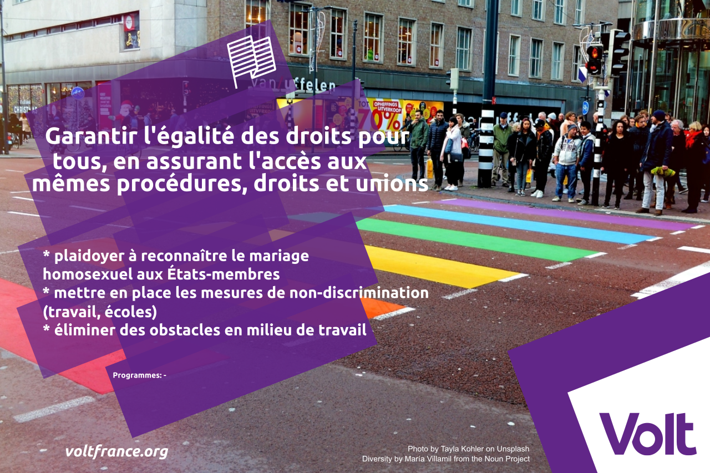Garantir l'égalité des droits pour tous, en assurant l'accès aux mêmes procédures, droits et unions à tous les membres de la société, y compris le mariage pour tous.
Pourquoi ? Il existe un certain nombre de cas dans l'Union européenne où des membres de la société sont victimes de discriminations. Ainsi, de manière frappante, le mariage pour tous et l'adoption par des couples homosexuels ne sont légaux que dans 15 États membres. De plus, les minorités ethniques et religieuses sont souvent victimes de marginalisation et ont des difficultés à exercer efficacement leurs droits et libertés. De même, les personnes handicapées, représentant 17,6% des Européens, sont confrontées à des restrictions les empêchant de participer pleinement à la société.
Comment ? Nous veillerons à ce que le Parlement européen adopte une recommandation invitant les États membres à reconnaître le mariage homosexuel en tant que forme légale d'union civile et permettant à chaque couple de bénéficier des mêmes possibilités d'adoption, quelle que soit son orientation sexuelle. Nous plaiderons également pour l'adoption d'une directive visant à garantir la mise en œuvre effective des directives anti-discrimination 2000/43/CE et 2000/78/CE. Par le biais de cette directive, nous demanderons aux États membres d'exiger la présence d'un responsable anti-discrimination, chargé de la surveillance et la lutte contre les discriminations dans des contextes sensibles tels que les écoles, les lieux de travail, les tribunaux, les hôpitaux, les sports et les activités de loisirs. En outre, nous proposerons et soutiendrons une directive (fondée sur les principes de l’article 153.1, lettres a et h), qui visera à aider les personnes handicapées à bénéficier d’un accès égal au marché du travail. Une telle directive visera à éliminer les obstacles structurels et à minimiser les conséquences d'une déficience sur la capacité d'un individu à travailler. La directive complétera l'actuelle stratégie européenne en faveur des personnes handicapées.
Financement ? Cette proposition n’entraîne aucun coût pour le budget de l’UE.
Secteur Public: Violence Policière
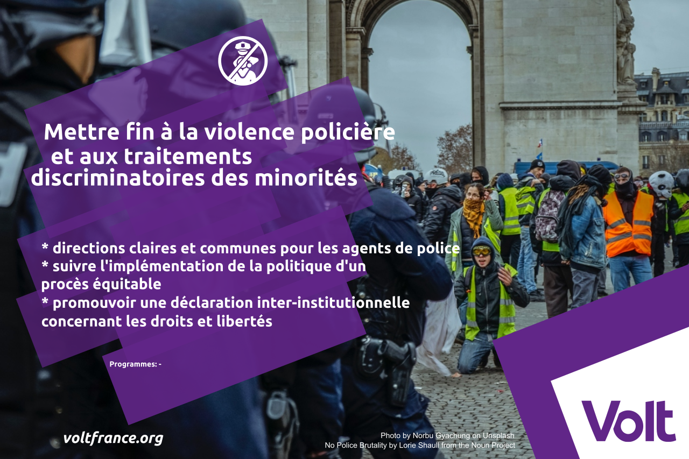Mettre fin à la violence policière et aux traitements discriminatoires des minorités, ceci en assurant des entraînements réguliers aux forces de l’ordre et sur base de révisions de lois, afin d’aborder les persécutions biaisée et assurant que le judiciaire ne discrimine pas les minorités.
Pourquoi ? Malgré les nombreuses lois anti-discriminatoires déjà existantes, les minorités à travers l’Europe font souvent l’affaire de contrôle et de questionnement isolés, et cela sans justifications adéquates, qui ces dernières sont souvent basées sur l’ethnicité de ces minorités, ou voir même sur base de leur religion ou leur couleur de peau. Ces personnes sont également plus souvent confrontés à des poursuites, des arrêts et des emprisonnements. D’autres groupes vulnérables, tels que les femmes ou les personnes LGBTIQ+, font souvent face à des discriminations en justice en raisin de pratique biaisée au sein du système de justice.
Comment ? On veut faire pression sur l’agence européenne de mise en vigueur des lois, afin que celle-ci développe des directions claires et communes, et ainsi limiter les discriminations opérées par les forces de l’ordre. On veut également renforcer les principes fondamentaux d’accès à la justice, déjà reconnus par l’UE (Art.47 CFREU; Art.4.3 TEU; Art.19 TEU), par le lancement d’une évaluation ayant pour but de tester et d’approuver l’implémentation de telles mesures européennes, qui elles ont l’objectif d’assurer une audience au tribunal de manière publique et juste (tel mentionné dans: directive 2012/13/EC; directive 2010/64/EU; directive 2013/48/EC). De plus on veut promouvoir une déclaration inter-institutionnelle, qui spécifique que l’Union Europénne reconnais les droits et libertés, définis par la Convention Européenne des droits de l’homme, comme principe généraux des lois de l’UE, incluant mais non limitant, l’interdiction de la torture, le droit à une audience juste, et le droit à un remède effective remède.
Financement ? Cette proposition affecte le budget de l’UE de manière non-significative.
Secteur Public: Diversité
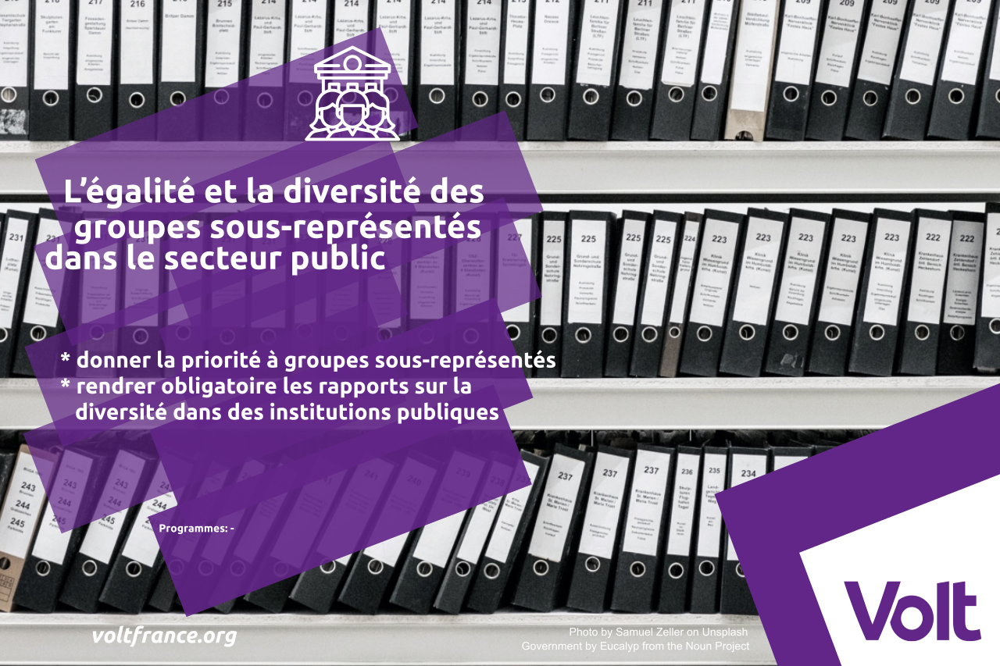L’égalité et la diversité des groupes sous-représentés dans le secteur public, des institutions des états-membres et de l’UE, sont notre objectif. Nous voulons atteindre cela en mettant en place des traitements préférentiels, qui informent les besoins de diversités et d’accommodations.
Pourquoi ? Les positions clefs sont représentées, tel au niveau national et niveau européen, par un groupe homogène d’individus, qui ne représentent pas correctement la société visant être représentée.
Comment ? Au sein du parlement européen, nous voulons mettre en place une directive demandant au administrations publiques nationales, régionales et locales à donner une considération spéciale, et ce par le processus d’engagement, aux individus venant de minorités sous-représentées, que ces derniers soient représentés sur base de la qualification de manière équitable. La directive demandera la rédaction de rapports obligatoires concernant la diversité, ainsi qu’une mise en place d’officier d’anti-discrimination au sein de l’établissement.
Financement ? Cette proposition affecte le budget de l’UE de manière non-significative.
Secteur Public: Représentation
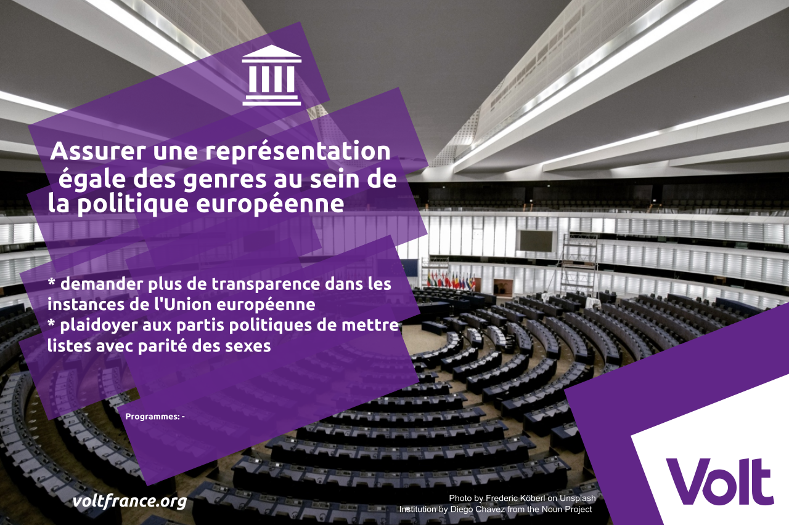Assurer une représentation égale des genres au sein de la politique européenne et d’encourager les femmes à la participation politique, et ce en ayant une obligation à ce que les listes de candidates soient alternés par le genre (c’est-à-dire qu’il n’y a pas de succession consécutive d’un même genre sur la liste).
Pourquoi ? Les hommes représentent presque 70% des parlementaires au sein de l’Union Européenne, tandis que les femmes ne représentent que 36%. Et ce malgré que des études menées, montrent qu’en ayant plus de femmes en politique résulte à une démocratie plus forte. Ainsi nous voulons une vraie égalité en termes de genres, et ce aussi dans les positions de décisions.
Comment ? Au parlement européen nous voulons faire passer une directive, qui demande que toutes les corps de l’Union Européenne dressent un rapport de balance des genres, afin de pouvoir agir activement et augmenter la représentation égale des genres. De plus nous voulons faire une recommandation aux partis politiques, de mettre en place une parité au sein de leurs listes électorales. Cette recommandation se basera également aussi sur l’alternance entre le genre homme et femme sur la liste électorale.
Financement ? Cette proposition affecte le budget de l’UE de manière non-significative.
Inclusion: Logement Abordable
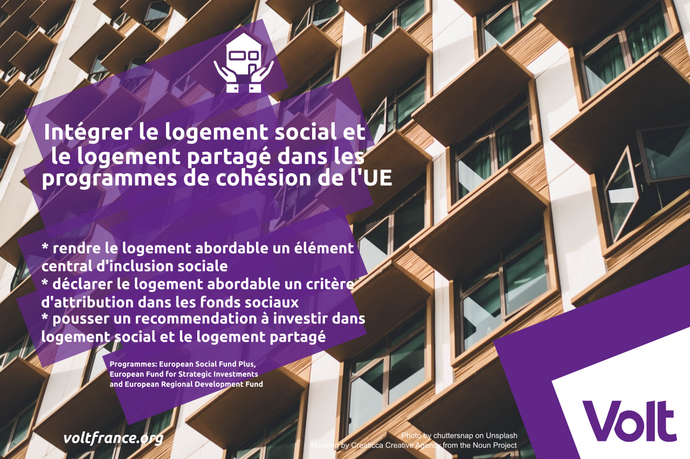Rendre le logement abordable, en intégrant le logement social et le logement partagé dans les programmes de la politique de cohésion de l'UE. Utiliser les fonds disponibles pour le logement social afin d'améliorer la situation des groupes à faible revenu, y compris les groupes marginalisés, et inciter les États membres à subventionner la vie sociale partagée.
Pourquoi ? La production de logements sociaux a diminué dans la plupart des États européens ces dernières années. Dans l'ensemble de l'UE, environ une personne sur 20 souffre de graves privations en matière de logement, alors que le taux de logements vides est actuellement le plus élevé. Pour les Européens, le taux de surcharge restant élevé29. En outre, dans la plupart des États membres, les prix des logements augmentent plus rapidement que les revenus, qui touchent principalement les pauvres et les groupes marginalisés, notamment les enfants.
Comment ?
Nous soutiendrons la Commission européenne dans la modernisation de sa politique de cohésion et veillerons à ce que le nouveau cadre alloue des fonds à des projets de développement durable, le logement social et le logement partagé dans toute l'UE. Pour ce faire, nous exercerons des pressions auprès du Parlement Européen en vertu des principes de la Charte des droits fondamentaux de l'UE, pilier européen des droits sociaux, que constitue l'accès à un logement abordable et à des conditions de vie décentes. Le logement constitue un élément central de l'objectif d'inclusion sociale. Nous allons demander également à la Commission européenne d'intégrer le logement social dans le processus d'intégration de l'allocation de fonds pertinents - tels que le Fonds social européen, ainsi que le Fonds européen d'investissement stratégique et Fonds européen de développement régional - pour soutenir les États membres et augmenter le budget de l’UE, ainsi que la transparence et l'accessibilité de ces fonds. Enfin, au sein du Parlement Européen , nous ferons pression en faveur d'une recommandation de la Commission appelant les États membres à investir dans le logement social et d'autres formes de vie partagée, en tant qu'instrument essentiel de lutte contre la pauvreté et d'appui à la lutte contre la pauvreté, pour les groupes marginalisés. Nous utiliserons également les cycles de coordination des politiques, à savoir le semestre européen et la méthode ouverte de coordination, pour encourager les États membres à adopter des initiatives visant à assurer un développement durable.Financement ?
Divers fonds seront utilisés, dont le Fonds social européen. En outre, le Fonds européen pour les investissements stratégiques et le Fonds européen de développement régional (FEDER) sont des instruments de coopération régionale.Inclusion: Pauvreté des Enfants
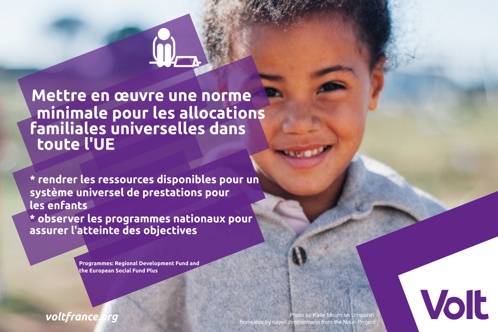Nous voulons aussi réduire la pauvreté des enfants, en mettant en œuvre une norme minimale pour les allocations familiales universelles dans toute l'UE.
Pourquoi ? Dans l'UE, jusqu'à 25 millions d'enfants vivent dans des ménages à faible revenu et sont exposés au risque de pauvreté et d'exclusion sociale.30 La pauvreté des enfants peut avoir des conséquences néfastes sur leur santé et les conséquences à long terme, affectant le niveau d'instruction, l'accès à l'éducation, l'accès à l'égalité et à la participation à la vie économique et sociale.
Comment ? Nous veillerons à ce que l'attention et les ressources financières nécessaires soient consacrées à la mise en œuvre de ces programmes. Des ressources sont consacrées à la mise en œuvre de normes minimales pour l'accès universel aux soins de santé, les allocations familiales afin d'assurer le bien-être des enfants jusqu'à ce qu'ils atteignent l'âge adulte, et de préserver leur dignité humaine. Nous lancerons un processus de coopération et de dialogue avec les institutions de l'UE, telles que le Conseil et le Parlement, afin de veiller à ce que les programmes opérationnels nationaux de l'Union européenne et le Fonds social européen et Fonds européen de développement régional allouent des ressources suffisantes pour financer cette proposition. De plus, nous allons assurer le suivi de la définition des programmes opérationnels nationaux par le biais du Parlement européen.
Financement ?Le Fonds de développement régional et le Fonds social européen Plus seront utilisés.